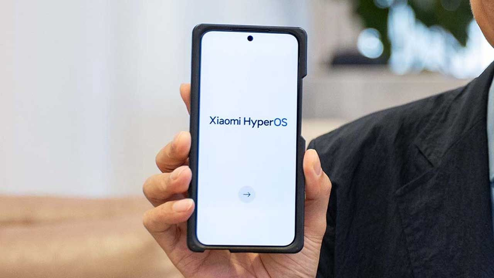

Xiaomi anuncia HyperOS, sistema que vai substituir a tradicional MIUI em 2024
Publicado em 30/10/2023

A Xiaomi apresentou oficialmente o novo sistema operacional HyperOS no evento de lançamento da linha Xiaomi 14, na última quinta-feira (26). A plataforma, que havia sido confirmada há duas semanas por um executivo da companhia no Twitter, vai substituir a antiga MIUI e promete conectar todo o ecossistema de produtos da gigante chinesa.
Em nota, a fabricante informa que o núcleo do sistema combina Linux e Vela, este desenvolvido pela própria Xiaomi — apesar de não mencionar o nome do Android, também deve incorporar recursos do Sistema do Robozinho e possivelmente suporte a aplicativos do rival. O firmware vai ocupar apenas 8,75 GB de espaço nos celulares, fator que a empresa considera uma vantagem sobre outros concorrentes.
Novidades do HyperOS
Confira algumas das novidades reveladas pela Xiaomi:
Interface remodelada
Mesmo sem trazer muitos detalhes, a Xiaomi já deu uma prévia sobre como deve ser a interface da nova HyperOS. Muitos elementos da MIUI ainda são preservados, enquanto o sistema se inspira cada vez mais no painel de controle e na central de notificações.
De acordo com o Xiaomiui, diversos apps nativos do sistema foram remodelados para a nova versão, mas ainda é necessário aguardar a liberação do Beta para conferir a diferença.
Reforço no desempenho
O novo sistema promete gerenciar o hardware para entregar a melhor performance possível sem comprometer a bateria dos celulares. Para isso, a empresa revela aprimoramentos em ajustes de prioridades e avaliação dinâmica dos ciclos de tarefas.
A Xiaomi revela que fez testes internos com jogos e garante que o HyperOS pode oferecer uma taxa de quadros mais estabilizada e menor consumo de energia em comparação ao Android. Com relação aos modelos mais leves, o SO também é capaz de gerenciar múltiplas tarefas enquanto aproveita o máximo do hardware disponível.
Fonte: Xiaomiui